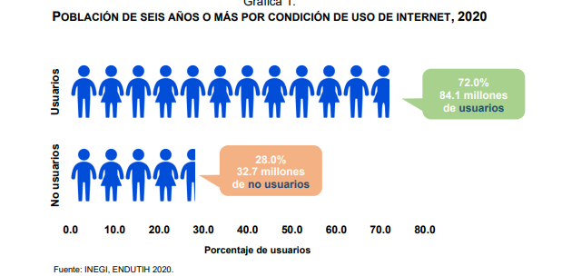
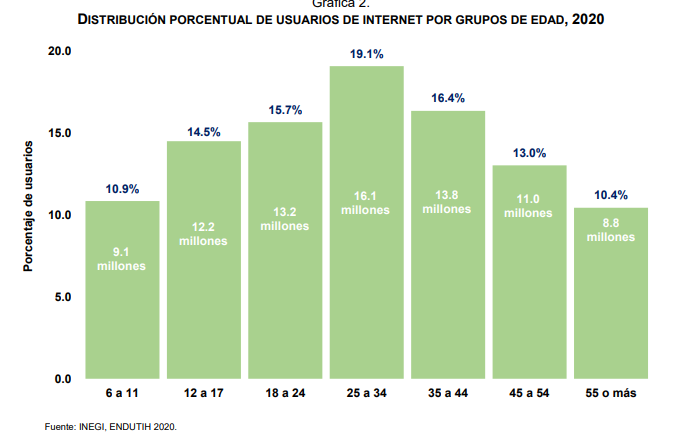
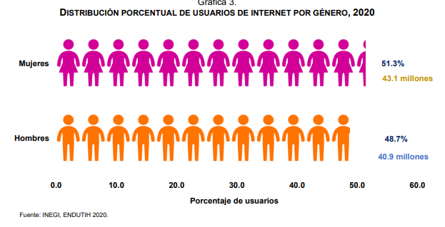

| HOME | INFORMACION | ACTUALIDAD | TECNOLOGIA | FUTURO | EDUCATIVO | LABORAL | REFERENCIAS |
| HOME | INFORMACION | ACTUALIDAD | TECNOLOGIA | FUTURO | EDUCATIVO | LABORAL | REFERENCIAS |
En 2020, 72.0% de la población mexicana (84.1 millones de personas) usó internet, según la Encuesta Nacional sobre Disponibilidad y Uso de Tecnologías de la Información en los Hogares. • El 60.6% de los hogares en México contó con acceso a internet (un total de 21.8 millones de hogares). • El 96.0% de las y los usuarios de internet utilizó un smartphone como equipo más frecuente para conectarse a internet. En marzo de 2006, la Asamblea General de las Naciones Unidas instituyó que el 17 de mayo sería el Día Mundial de las Telecomunicaciones y la Sociedad de la Información. Por este motivo, el INEGI presenta estadísticas de la Encuesta Nacional sobre Disponibilidad y Uso de Tecnologías de la Información en los Hogares (ENDUTIH) 2020. El objetivo es sensibilizar sobre la necesidad de reducir la brecha digital a largo plazo y emplear las Tecnologías de Información y Comunicación (TIC) como medios de desarrollo integral material y humano
Según la ENDUTIH 2020, 72.0% de la población mexicana de seis años y más utilizó internet (84.1 millones). La cifra indica un avance de 1.9 puntos porcentuales con respecto a los datos de 2019 (70.1%).
Los tres grupos con mayor acceso a internet fueron: las personas entre 25 y 34 años (19.1%), las de 35 a 44 años (16.4%) y las de 18 a 24 años (15.7%).
La mayoría de las 84.1 millones de personas que usaron internet fueron mujeres (51.3%, lo que las coloca 2.6 puntos porcentuales arriba de los hombres (48.7%).
